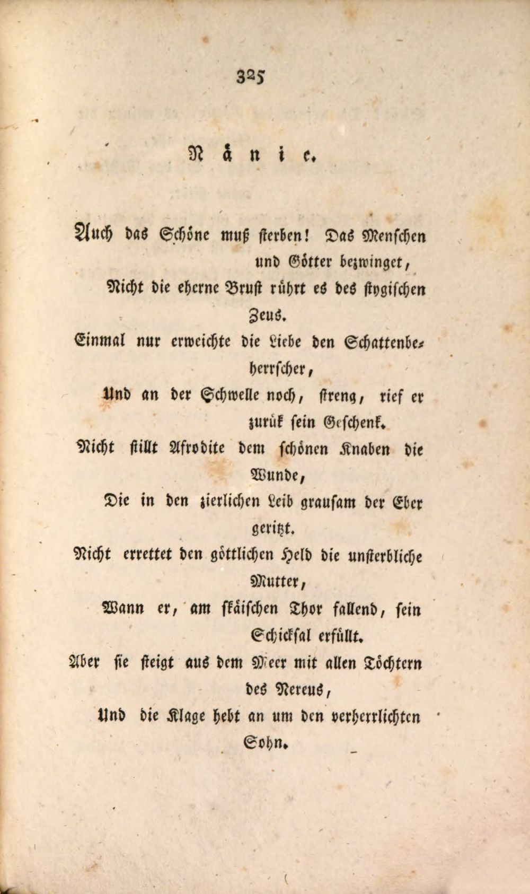
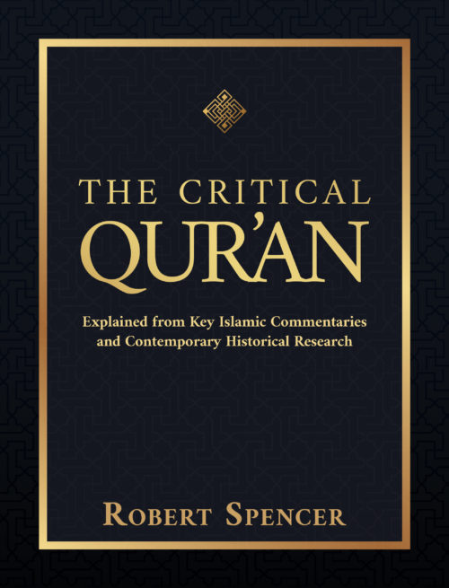

55:08 · 10 OPERE
La traduzione ed interpretazione del mondo.
Il filo del discorso
Il rapporto fra parole e realtà è il filo conduttore di un intervento che parte da un breve passo di David Brooks sulla stanchezza politica degli americani. Dr Divago si domanda se discutere continuamente gli argomenti dei grandi mezzi di comunicazione non significhi lasciarsi dettare il campo del discorso. Interpreta la sfiducia come possibile ritorno di un giudizio autonomo, ma teme che la ripetizione di slogan e cornici emotive abbia sostituito il confronto con i fatti. Le digressioni su Medio Oriente, Cipro, Turchia e giornalismo italiano conservano il carattere polemico del contributo: giudizi e accuse del relatore restano distinti dai riscontri storici e giuridici. La democrazia introduce una tensione: rispettare una scelta elettorale e insieme interrogarsi sulle condizioni in cui quella scelta si forma. Il richiamo a Schiller apre una seconda prospettiva. Nänie ricorda la morte di ciò che è bello e la sua sopravvivenza nel canto; il relatore ne fa una immagine della possibile perdita della razionalità. Dalla natura greca e dalla geometria passa al relativismo, distinguendo ciò che esiste dal desiderio che sia diverso. L’esempio della temperatura richiede però una precisazione: misurare una grandezza fisica e stabilire se una persona provi caldo sono operazioni diverse, entrambe compatibili con una realtà condivisa. Il tema della formazione attraversa i riferimenti a Milton Mayer e John Taylor Gatto, alla scuola e alle differenze fra percorsi di istruzione. Dr Divago denuncia un apprendimento ridotto alla ripetizione e rivendica la capacità di correggere i propri schemi. Il nucleo teorico viene affidato a LTI di Victor Klemperer: le parole possono rendere familiare una ideologia e modificare il modo di percepire il mondo. L’opera sul linguaggio del nazismo offre un oggetto preciso di lettura; non rende automaticamente equivalenti al nazismo tutte le situazioni contemporanee cui il relatore la accosta. Nel finale, tradurre il mondo significa riconoscere ciò che si incontra e portarlo nel linguaggio senza subordinare ogni osservazione a una narrazione già pronta. La critica alla volontà che impone il proprio desiderio si unisce alla preoccupazione per un individuo isolato e privo di autonomia. Il richiamo ai nomi dei cosiddetti bizantini mostra quanto una categoria storica richieda contesto; il riferimento a Schweitzer porta il discorso sul rispetto della vita. Isaia chiude il cerchio con la distinzione fra bene e male. Il contributo propone dunque una responsabilità del giudizio che, per restare coerente con la propria richiesta di verità, deve valere anche per le sue analogie, generalizzazioni e ipotesi politiche.
I libri nel discorso

Storie
Identificazione probabile
Copertina del volume III: libri V–VI: Copertina del volume III, libri V–VI, della edizione BUR Classici greci e latini, a cura di Domenico Musti, traduzione di Manuela Mari, note di John Thornton, testo greco a fronte, ISBN 9788817128438. Il catalogo indica 544 pagine. Volume pertinente perché include il libro VI; non si presume che rappresenti tutti i volumi o la copia del relatore.
Immagine autentica del volume che include il libro citato, con autore, titolo e numerazione leggibili; non copertina di un volume differente e non edizione attribuita al video.
Polibio esplicito e richiamo alla verità nella storiografia: rimando probabile alle Storie, senza libro o capitolo nominato. La copertina esistente è di un volume parziale dichiarato, non del passo I14.
Passaggio 8:37 ↗ · Fonti e libro ↗
Isaia
Copertina del volume completo: San Paolo, 2014 · Nuova Versione dai Testi Antichi · edizione di riferimento
Isaia è un libro della Bibbia. L’immagine mostra il volume completo di riferimento San Paolo, non un’edizione autonoma di Isaia né una versione identificata nella citazione.
Isaia nominato e passo riconoscibile come 5,20 sulla inversione di bene e male; ripreso anche nella chiusa.
Passaggio 14:57 ↗ · Fonti e libro ↗
Nänie / Nenia
Pagina originale della poesia · Gedichte, 1800: Pagina originale della poesia in Gedichte, volume I, Leipzig: Crusius; Jena: Göpferdt, 1800, pp. 325–326, esemplare della Bayerische Staatsbibliothek P.o.germ. 1274 n-1, identificatore bsb10119188. La poesia fu pubblicata nel 1800, con composizione probabilmente nel 1799. L’immagine è la pagina iniziale, non una copertina esterna.
Scansione della pagina 325, immagine digitale 339, Bayerische Staatsbibliothek. Pagina della poesia in una raccolta, non copertina di un volume autonomo intitolato Nänie. Indicazione del fornitore: No Copyright – Non-Commercial Use Only,https://rightsstatements.org/vocab/NoC-NC/1.0/.
Schiller, titolo scandito Nänie e incipit tedesco riconoscibili; riscontro sul testo originale e nel catalogo DLA.
Passaggio 19:13 ↗ · Fonti e libro ↗
They Thought They Were Free: The Germans, 1933–45
Copertina: Copertina della edizione inglese ampliata University of Chicago Press 2017, con postfazione di Richard J. Evans, ISBN 9780226525839. Il catalogo corrente indica 384 pagine, mentre una pagina di estratto ne indica 368; la differenza non identifica la precisa tiratura del filmato. Prima pubblicazione 1955. La traduzione orale del titolo non dimostra una edizione italiana specifica.
Titolo e autore leggibili sulla copertina originale del sito editoriale; Evans è autore della postfazione, non coautore della inchiesta 1955.
Titolo inglese riconoscibile e resa Pensavano di essere liberi; autore descritto attraverso la ricerca fra tedeschi dopo la guerra.
Passaggio 26:24 ↗ · Fonti e libro ↗
Cuore
Copertina: BUR · 2011 · edizione cartacea
Immagine autentica dell’opera, controllata visivamente; non identifica l’edizione usata nel video.
Il titolo Cuore è esplicito nel confronto fra modelli di scuola.
Passaggio 28:18 ↗ · Fonti e libro ↗
The Critical Qur’an. Explained from Key Islamic Commentaries and Contemporary Historical Research
Identificazione probabile
Copertina: Bombardier Books / Post Hill Press, hardcover ISBN 9781642939491, uscita catalogata 3 maggio 2022, 560 pagine; alcuni cataloghi riportano copyright 2021.
Immagine autentica dell’opera, controllata visivamente; l’edizione di riferimento non è attribuita al filmato.
Spencer e la sua traduzione commentata del testo religioso sono evocati: identificazione probabile del volume, titolo non pronunciato.
Passaggio 31:28 ↗ · Fonti e libro ↗
Corano
Copertina: BUR Classici, edizione aggiornata
Edizione con introduzione, traduzione e commento di Alessandro Bausani, a cura di Layla Mustapha Ammar. Anno della ristampa non dedotto dalla copertina; nessuna edizione attribuita al video.
Corano e quarta sura espliciti; non viene assegnata alla lettura una traduzione italiana non nominata.
Passaggio 33:04 ↗ · Fonti e libro ↗
LTI. La lingua del Terzo Reich. Taccuino di un filologo
Copertina: Giuntina, Schulim Vogelmann 72, 355 pagine, ISBN 9788880570721. La pagina editoriale indica anno 1999 e tre riedizioni; altri cataloghi datano esemplari 1998 o 2008, senza che questo identifichi la copia del filmato. A cura di Elke Fröhlich, traduzione di Paola Buscaglione, prefazione di Michele Ranchetti. Originale tedesco LTI. Notizbuch eines Philologen, 1947.
Immagine autentica dell’opera, controllata visivamente; l’edizione di riferimento non è attribuita al filmato.
Victor Klemperer e Lingua Tertii Imperii nominati; normalizzazione dei riconoscimenti automatici Clamperer e Klempner.
Passaggio 36:58 ↗ · Fonti e libro ↗
Il Principe
Identificazione probabile
Copertina: Feltrinelli · 2013 · a cura di Ugo Dotti
Immagine autentica dell’opera, controllata visivamente; l’edizione di riferimento non è attribuita al filmato.
Machiavelli e il manuale politico riconoscibile come Il Principe; titolo non pronunciato, identificazione probabile.
Passaggio 42:01 ↗ · Fonti e libro ↗
La società aperta e i suoi nemici
Identificazione probabile
Copertina: Armando Editore · Classici · 2018 · volume unico
Copertina autentica di riferimento, controllata visivamente. L’edizione non è identificata come quella usata nel video.
Platone presentato come nemico della società aperta: rimando probabile all’opera di Popper, senza autore o titolo completo.
Passaggio 42:20 ↗ · Fonti e libro ↗